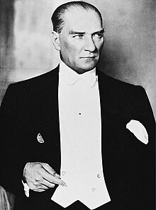

Presidentes de Turquía
Mustafa Kemal Atatürk

Período: 1923-1938
Fundador de la República de Turquía, implementó reformas que modernizaron el país, incluyendo la abolición del califato y el cambio al alfabeto latino.
İsmet İnönü
Período: 1938-1950
Lideró Turquía durante la Segunda Guerra Mundial, manteniéndolo neutral, y promovió la transición al multipartidismo.
Celâl Bayar
Período: 1950-1960
Primer presidente electo democráticamente. Su mandato terminó con el golpe militar de 1960.
Cemal Gürsel
Período: 1961-1966
General que asumió la presidencia tras el golpe de Estado. Trabajó para estabilizar el país y redactar una nueva constitución.
Turgut Özal

Período: 1989-1993
Introdujo reformas económicas y promovió la integración de Turquía en la economía global.
Recep Tayyip Erdoğan
Período: 2014-Actualidad
Transformó el sistema parlamentario en un régimen presidencialista y lideró Turquía en tiempos de crecimiento y desafíos políticos.
Conflictos Sociales en Turquía
Desde los años 80, el PKK ha liderado una insurgencia armada por la autonomía de los kurdos. Este conflicto ha causado más de 40,000 muertes y sigue siendo una de las principales tensiones internas de Turquía. Las áreas del este del país continúan siendo escenario de enfrentamientos, con un impacto significativo en las poblaciones locales y en la economía regional.
En 2013, las protestas por la demolición de un parque en Estambul se convirtieron en un movimiento nacional contra el autoritarismo del gobierno. Millones de personas participaron en estas protestas, que simbolizan la lucha por la libertad de expresión y los derechos civiles en Turquía.
El 15 de julio de 2016, una facción militar intentó derrocar al gobierno. Aunque el golpe fracasó, desencadenó purgas masivas que incluyeron el despido de miles de funcionarios públicos, maestros y militares, marcando un punto de inflexión en la política turca.
Turquía alberga a más de 3,7 millones de refugiados sirios, siendo el país con mayor número de refugiados en el mundo. Este fenómeno ha generado tensiones económicas y sociales, especialmente en las grandes ciudades, donde se perciben dificultades en el acceso a recursos y empleos.
Las disputas territoriales en el Mar Egeo y el Mediterráneo Oriental han llevado a enfrentamientos políticos y militares entre Turquía y Grecia. Las tensiones también han escalado debido a los derechos de exploración de gas natural en la región.
Bajo el gobierno de Erdogan, Turquía ha enfrentado críticas por la censura, el encarcelamiento de periodistas y la falta de libertad de prensa. Estas medidas han generado preocupación internacional sobre el estado de la democracia en el país.
En los últimos años, Turquía ha enfrentado protestas masivas en defensa de los derechos de las mujeres. La violencia de género, los feminicidios y la retirada del Convenio de Estambul han desatado críticas internacionales y demandas de justicia social.
Las minorías religiosas en Turquía, como los cristianos y los alevíes, han enfrentado discriminación y restricciones en la práctica de su fe. Estas tensiones han complicado las relaciones intercomunitarias y el diálogo interreligioso.
Turquía enfrenta desafíos relacionados con el cambio climático, como sequías, inundaciones y una mala gestión de recursos hídricos. Estas problemáticas han afectado a la agricultura y a las comunidades rurales, generando conflictos sobre el uso del agua.